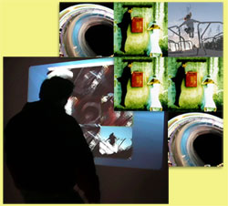
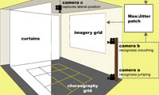
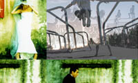
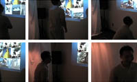

 We present an interactive installation that introduces a new type of affordance, the choreographic button, which integrates movement, gesture recognition, and interactive visual feedback. Our intention was to promote social interaction and creative emergence. Jumping, a quick movement, and crouching, a sustained gesture, were choreographed to form a vocabulary that is personally expressive and which also facilitates automatic recognition. Arranged in a 3 x 3 grid in the installation, these choreographic buttons are used to explore a collection of consonant imagery, which consists of personal movements of extension and contraction. The movements function as expressions through which participants dynamically create a series of individual and collaborative compositions. Narrative and lyrical components emerge through elements and patterns. Movements in the installation contribute to an embodied process of interaction that integrates dance performance with control structure and feedback, engaging onlookers in each successive participant�s creative process. By conducting an integrated user study / art opening event, we found this promotes social interaction between participants and onlookers.
  